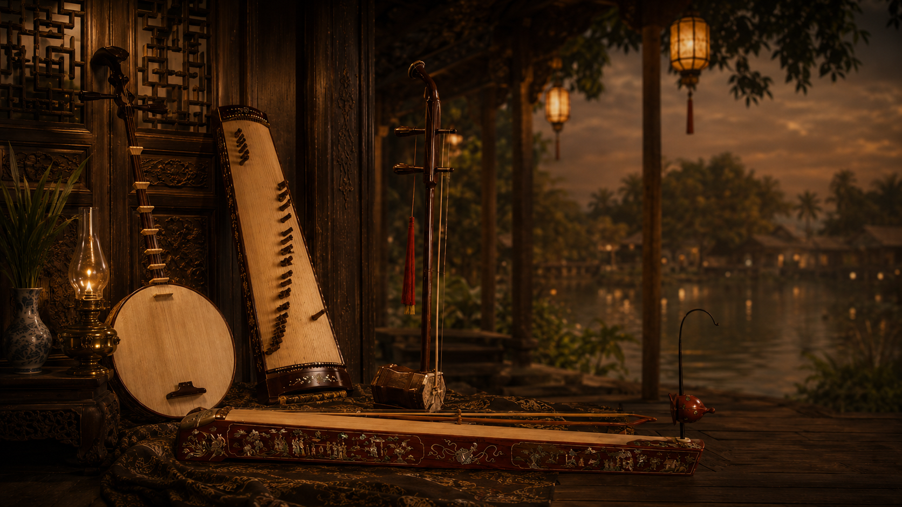
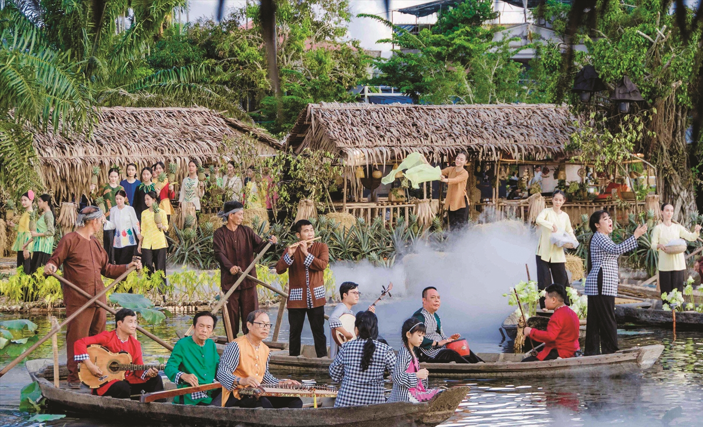
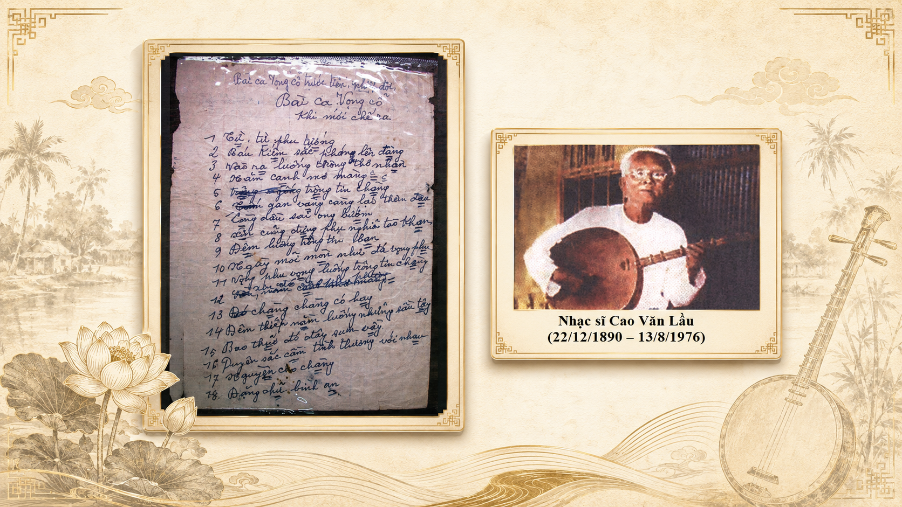
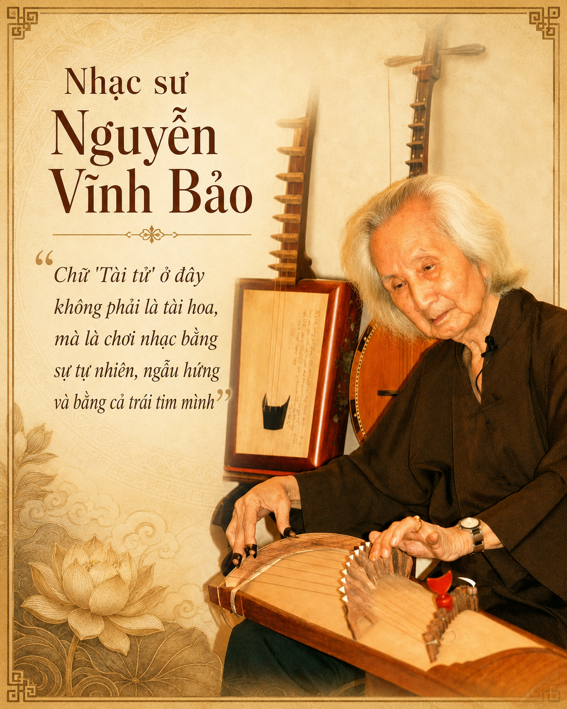

Màn hình mở đầu có tiếng đàn. Sau khi vào trang, hãy click từng nhạc cụ như nhặt vật phẩm trong game.

Vì sao thứ âm nhạc này chỉ có thể sinh ra ở miền Tây? Đờn ca tài tử không chỉ là một dòng nhạc — nó là cách một vùng đất mới trả lời câu hỏi: làm sao để không quên mình là ai.
Trời sập tối trên một con kênh ở miền Tây. Ngày làm ruộng đã xong. Không có sân khấu, không vé, không đèn màu — chỉ một manh chiếu trải trước hiên, một bình trà, và dăm người ngồi xuống. Ai đó so dây cây đàn kìm. Rồi tiếng đờn cất lên.
Đó là đờn ca tài tử. Nhìn thoáng qua, đây tưởng như một buổi hát dân gian bình thường. Nhưng chỉ cần dừng lại và hỏi một câu — tại sao thứ âm nhạc này lại sinh ra ở đây, giữa đồng bằng sông nước, chứ không phải nơi nào khác — ta sẽ chạm vào cả câu chuyện của một vùng đất.

Đồng bằng sông Cửu Long là vùng đất được người Việt khai mở sau cùng trong hành trình Nam tiến. Đất thấp, mênh mông sông rạch, phù sa và cá tôm — nhưng cũng là nơi xa quê cha đất tổ nhất. Những lưu dân từ miền Trung xuôi về đây mang theo cày cuốc để mưu sinh, và cả một thứ không cân đo được: ký ức về nơi họ đã rời đi.
Trong hành trang tinh thần ấy có âm nhạc. Sau biến cố kinh đô Huế thất thủ năm 1885, nhiều nhạc quan triều Nguyễn theo phong trào Cần Vương lần vào phương Nam, đem theo vốn nhã nhạc cung đình và ca Huế. Dọc đường, tiếng đàn của họ dừng chân ở Quảng Bình, Quảng Trị, Quảng Nam — thấm thêm âm hưởng xứ Quảng trước khi vào tới đồng bằng.
Người ta không mang được ngôi làng theo mình. Nhưng người ta mang được một điệu nhạc — và điệu nhạc ấy trở thành ngôi làng.
Đây là điều mấu chốt: đờn ca tài tử không tự nhiên mà có. Nó là ca Huế theo chân người rời khỏi chốn cung đình, đặt vào tay những con người vừa khai hoang vừa nhớ nhà. Và một khi đã xa cung vua, thứ âm nhạc bác học ấy buộc phải đổi thay để sống được trên đất mới.
Người miền Tây có tiếng phóng khoáng, cởi mở, trọng nghĩa khinh tài. Đó không chỉ là chuyện tính cách — nó chảy thẳng vào cách âm nhạc cất lên. Ở cung đình, nhạc phải đúng khuôn phép. Nhưng trên chiếu đờn miền Tây, người đàn không giữ y nguyên như thầy dạy: họ thêm thắt, tô điểm, biến hóa theo cảm xúc của chính đêm hôm đó.
Giới tài tử gọi cái khung giai điệu gốc là "lòng bản" — phần lõi cố định của mỗi bài. Người chơi phải thuộc lòng bản, rồi từ đó tự do "ứng tấu, ứng tác": nhấn, rung, luyến, láy theo ngón đàn riêng của mình. Vậy nên cùng một bài, cùng một lòng bản, hai người đàn ra hai tiếng lòng khác nhau — và cùng một người, đêm nay với đêm mai cũng chẳng bao giờ giống hệt.
Chữ "tài tử" không có nghĩa là nghiệp dư. Nó có nghĩa là người có tài — người đàn ca không phải để kiếm sống, mà để tri âm.
Nghĩa gốc của chữ "tài tử"Chính vì thế, đờn ca tài tử vừa bác học vừa bình dân: bác học ở gốc gác cung đình và ở số năm khổ luyện (một người học đàn cần ít nhất ba năm chỉ để nắm các kỹ thuật cơ bản), bình dân ở chỗ nó diễn ra ngay trên hiên nhà, không rào ngăn giữa người đàn và người nghe.
Ban tài tử cổ điển rất gọn: bốn nhạc công, bốn cây đàn — gọi là tứ tuyệt. Chúng không hòa cùng một bè, mà đối đáp, nhường nhau, ứng tấu như bốn người bạn đang chuyện trò trong đêm.
Đàn hai dây, thân tròn như vầng trăng. Giữ nhịp, dẫn dắt cả ban. Khi buồn, chỉ riêng cây kìm cũng đủ giãi bày một nỗi lòng.
Hai dây kéo bằng vĩ. Tiếng ngân gần với giọng hát nhất trong bộ tứ — nó khóc được, cười được, than được.
Tiếng gảy réo rắt như nước chảy qua ghềnh. Chính ở đây, ngón nhấn nhá, luyến láy làm nên cái "mùi" rất riêng của Nam Bộ.
Chỉ một sợi dây mà gợi cả trời tâm sự. Vì khó chơi, đàn bầu hay được thay bằng ghi-ta phím lõm — cây đàn phương Tây được người Việt khoét lõm mặt phím để nhấn nhá được như đàn dân tộc.
Kho tàng tài tử mênh mông, nhưng tất cả khởi đi từ 20 bài bản tổ — được giới nghề gọi trang trọng là "nhị thập huyền tổ bản". Người xưa chia chúng thành bốn hệ điệu, và gắn mỗi hệ với một mùa. Không phải mùa của thời tiết, mà mùa của cảm xúc.
Rộn ràng, sáng sủa. Lưu Thủy, Phú Lục, Xuân Tình… như nắng đầu năm trải trên đồng.
Đĩnh đạc, dùng trong tế lễ. Xàng Xê, Ngũ Đối, Long Đăng… giữ lại cốt cách nhạc lễ.
Nam Xuân, Nam Ai, Nam Đảo. An nhàn mà thoáng buồn, như heo may trên mặt sông.
Tứ Đại Oán, Giang Nam, Phụng Hoàng, Phụng Cầu. Đỉnh cao của nỗi niềm.
Điều đáng chú ý: điệu Oán là sáng tạo thuần Nam Bộ — không đem về từ Huế, mà do chính những con người sống trên đất mới nghĩ ra. Nếu bài Bắc là ký ức đem theo từ cố hương, thì bài Oán là tiếng nói của riêng vùng đất này. Đó là khoảnh khắc đờn ca tài tử thôi là một tiếng vọng của Huế, và trở thành tiếng nói của chính mình.
Về sau, bên cạnh 20 bài tổ, người ta thêm những "bài bản vắn" và đặc biệt là Vọng cổ — bắt nguồn từ Dạ cổ hoài lang của Cao Văn Lầu ở Bạc Liêu, viết từ tâm sự người vợ nhớ chồng lúc đêm về. Bản nhạc ấy sau này trở thành linh hồn của cả sân khấu cải lương.

Đằng sau mỗi chiếu đờn là một con người cụ thể: người nghệ nhân đã dành cả đời cho tiếng đàn, người thầy truyền nghề cho lớp trẻ, hay một gia đình mà ba bốn thế hệ cùng biết đàn ca. Đây là nơi câu chuyện chạm vào người xem mạnh nhất — không phải qua số liệu, mà qua một gương mặt.

"…" — để trống một câu nói thật của nghệ nhân bạn phỏng vấn. Một câu giản dị về lý do họ vẫn còn đàn.
Tên nghệ nhân · Địa phươngKhi làm cho một địa phương cụ thể, phần này nên là một nhân vật thật, có tên, có gương mặt, có giọng nói. Người xem sẽ quên số liệu, nhưng nhớ một con người.
Khác với nhiều di sản chỉ gói trong một vùng nhỏ hoặc diễn theo mùa, đờn ca tài tử trải rộng khắp phương Nam và vang lên quanh năm — trong đám giỗ, tiệc cưới, buổi họp mặt, hay chỉ một đêm rảnh bên bờ sông.
Nhạc quan triều Nguyễn theo phong trào Cần Vương lần vào phương Nam, đem theo vốn ca Huế và nhã nhạc cung đình về vùng đất mới.
Ca Huế gặp đất mới, định hình thành tài tử qua ba nhóm: miền Đông do Nguyễn Quang Đại (cụ Ba Đợi), miền Tây do Trần Quang Quờn, Bạc Liêu – Rạch Giá do Nhạc Khị. Điệu Oán ra đời — sáng tạo thuần Nam Bộ.
Cao Văn Lầu viết bản nhạc từ nỗi nhớ chồng của người vợ. Từ đó nảy sinh vọng cổ, rồi cải lương — đưa tiếng đờn tài tử lên tầm ảnh hưởng mới.
Ngày 5/12 tại Baku (Azerbaijan), UNESCO ghi danh đờn ca tài tử — di sản phi vật thể thứ 8 của Việt Nam ở tầm quốc tế.
Đờn ca tài tử không nằm sau lớp kính bảo tàng. Nó nằm ở buổi chiều có người chịu bắc ghế, so dây và cất tiếng. Mỗi địa phương giữ được một chiếu đờn là giữ được một mạch sống của cả vùng đất — và giữ cho con cháu một lối để biết mình từ đâu tới.